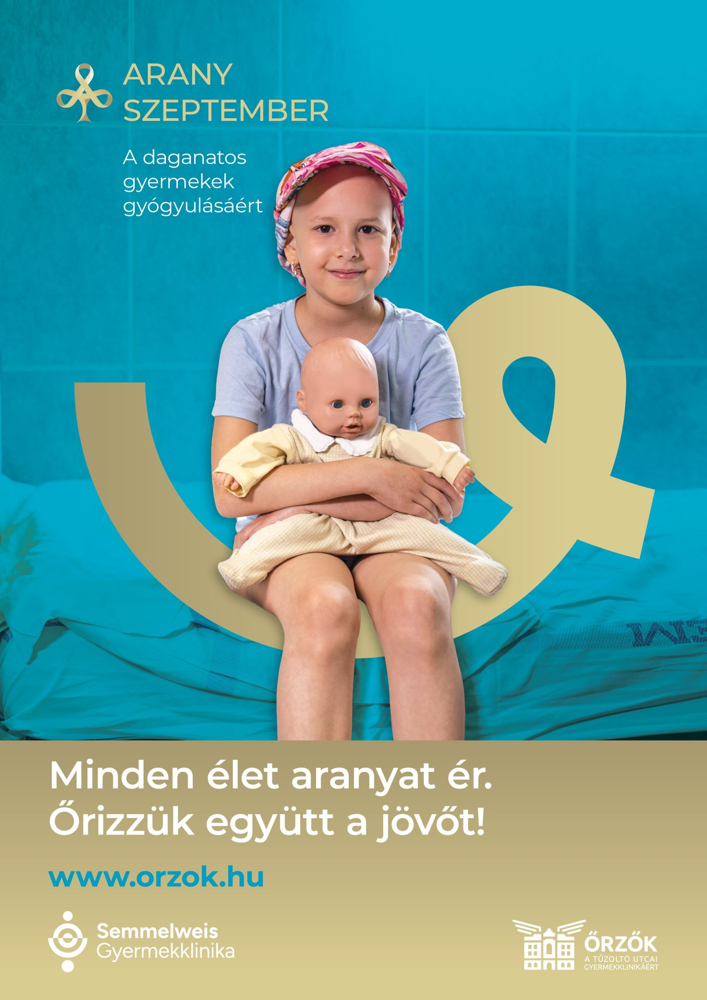
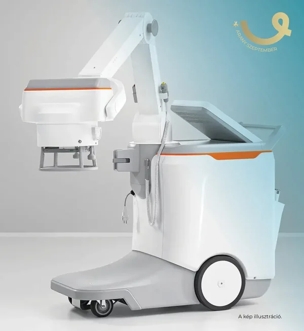

Bizonyára hallottál már a havi 5000 forintos dízeltámogatásról a 150 lóerő alatti autókra. Ha dízelmotoros autód van, szeptember 30-án ez az összeg megérkezik a számládon. Egy autó fenntartásához képest ez alig 7 liter gázolajra elég. Ha te is megteheted, hogy a családi költségvetésedből nélkülözd ezt a pénzt, tegyünk együtt valami rendkívülit!
Én az első havi dízeltámogatásomat a Semmelweis Egyetem Gyermekgyógyászati Klinika (Tűzoltó utcai részleg) hivatalos alapítványának, az Őrzők Alapítványnak ajánlottam fel. Az idei Arany Szeptember kampányukban egy digitális mobil gyermek-röntgenkészülékre gyűjtenek, amivel a daganatos kisbetegeket közvetlenül az ágyukban vizsgálhatják, megkímélve őket a radiológiai osztályra szállítástól. A kórházi dolgozóknak is hatékony segítség lenne a hatékony munkához, s a gyors diagnózishoz.


A megvásárolni kívánt mobil eszköz
Te benne vagy ebben a segítőkész fél százalékban? Csatlakozz hozzánk!
Támogatom a mobil gyermekröntgen beszerzésétA gombra kattintva közvetlenül az Őrzők Alapítvány hivatalos, biztonságos online adományozási felületére jutsz. A #NemTankolomEl kezdeményezés és ez a honlap teljesen privát és nonprofit, harmadik félként adatokhoz vagy pénzhez nem férek hozzá.